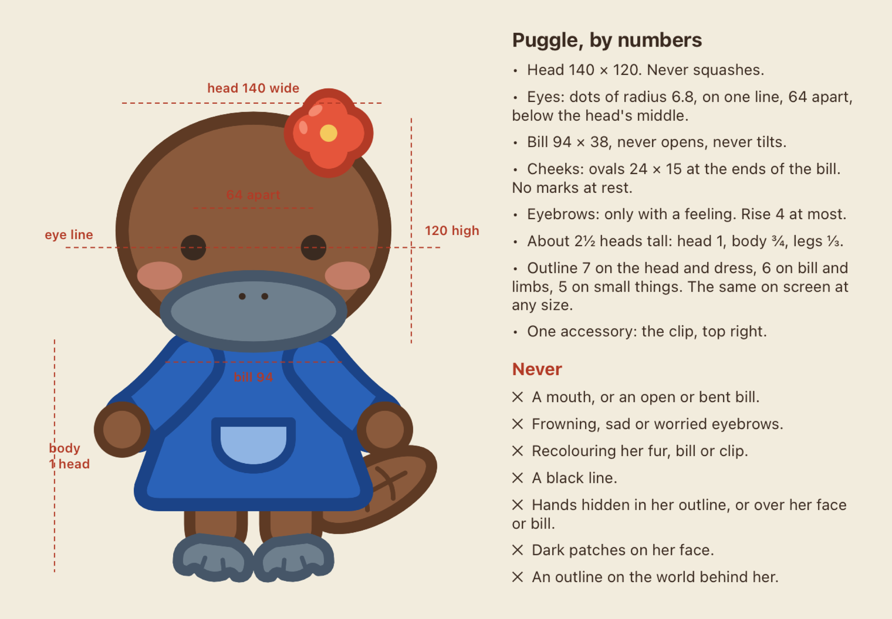
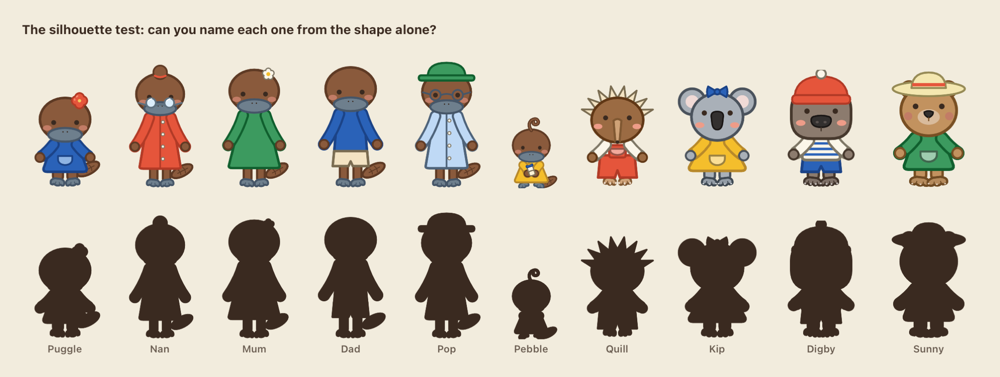
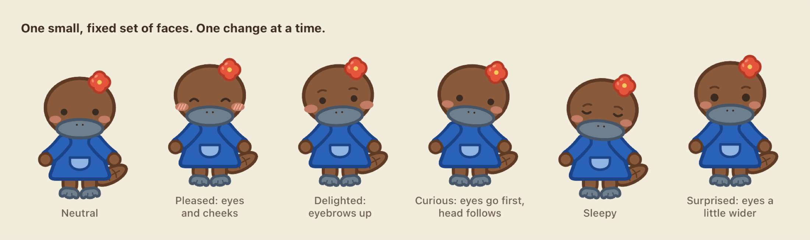
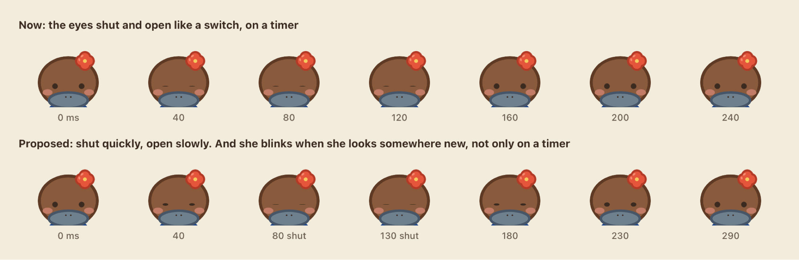
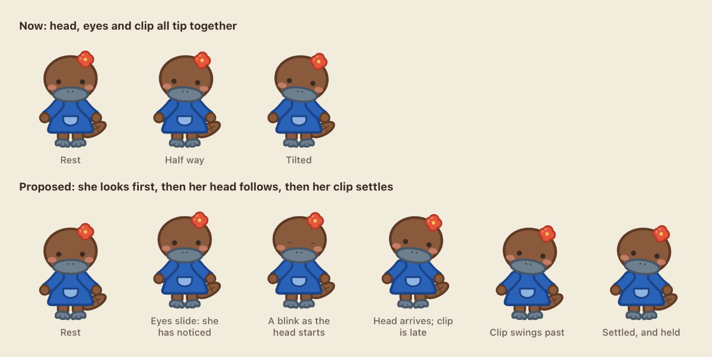
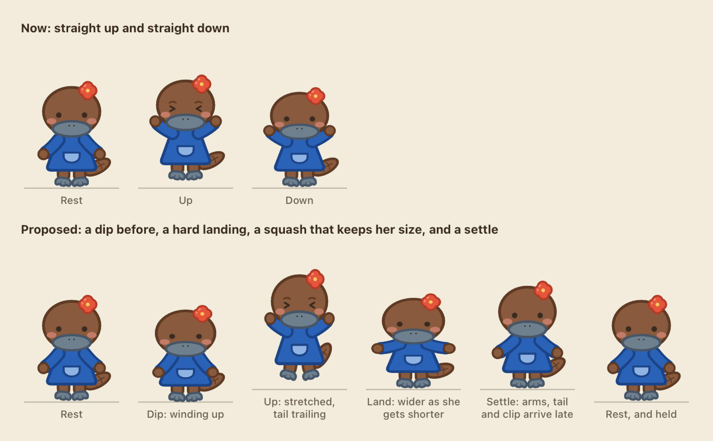
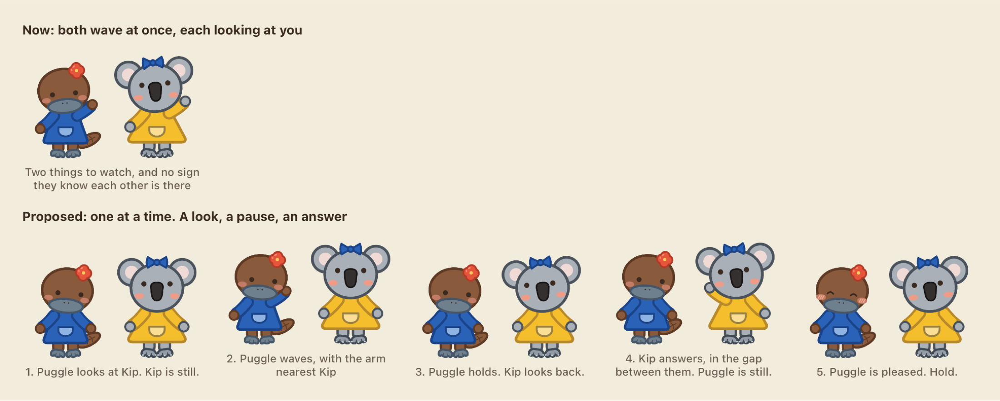
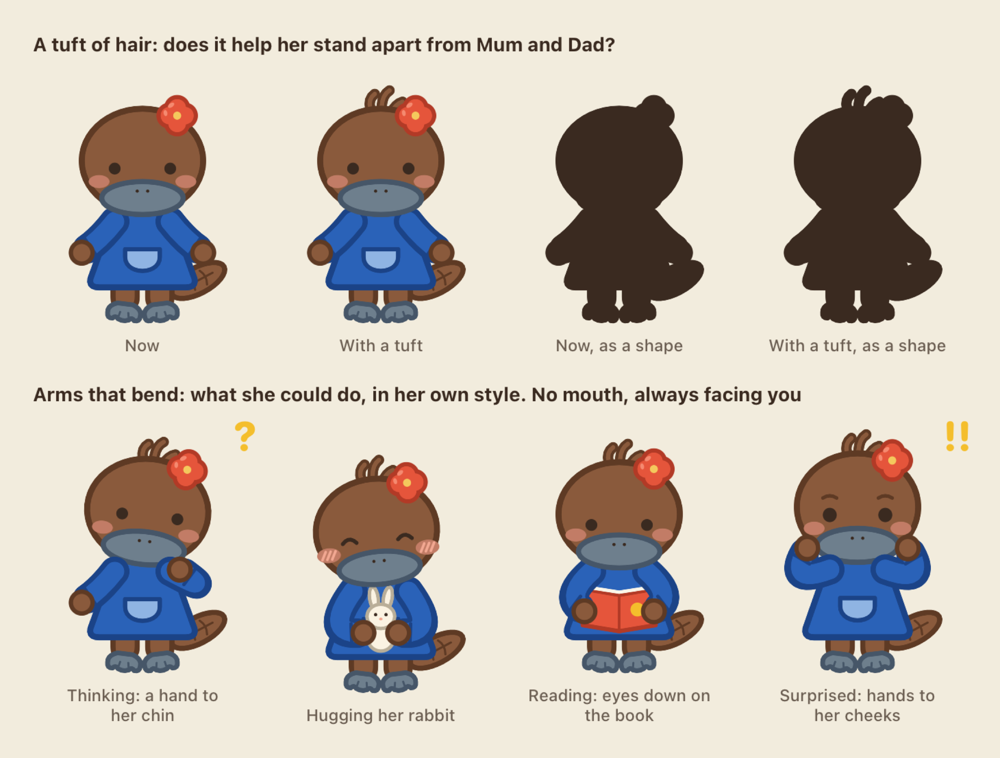

Puggle: the next layer of refinement
Eight mock-ups of what could change, drawn with the app's own characters so each shows what would really move. None of it is built. Where a mock-up has two rows, the top is how it works now and the bottom is the proposal.
1A model sheet, written as numbers
Her look becomes a short list of measurements and a "never" list, so every new pose, outfit and cast member can be checked against it. The Simpsons keeps its cast consistent the same way: countable rules, not adjectives.

2The silhouette test
Everyone filled in solid. The friends pass easily: spines, round ears, a beanie, a wide hat. The platypus family is the weak spot. Nan's bun and Pop's hat carry them, but Mum and Dad are almost the same shape, and both are close to a tall Puggle.

3A small, fixed set of faces
Six faces, each made from one or two small changes to eyes, eyebrows, cheeks or the tilt of her head. No mouth, no sad or cross eyebrows. On a face this simple, tiny changes carry a lot, so the set stays small and each one is tested on its own.

4Blinks that mean something
Today her eyes shut and open like a switch, on a timer. The proposal has two parts. The blink closes quickly and opens slowly, which is how a real one goes. And she also blinks when she looks somewhere new or when something registers, so a blink reads as a thought.

5Her eyes lead, her head follows
Today her head, eyes and clip tip over as one piece. In the proposal she looks first, blinks as her head starts to move, and her clip arrives a moment late and swings past before it settles. It is the same tilt, but it now reads as her noticing something.

6A hop with weight
Today she goes straight up and straight down. The proposal adds a small dip before she leaves the ground, a stretch on the way up with her tail trailing, a landing where she gets wider as she gets shorter, and a settle where her arms, tail and clip catch up. Her head never squashes.

7Two together: a look, a pause, an answer
Today Puggle and whoever is with her both wave at once, each looking straight out. In the proposal only one of them moves at a time. Puggle looks at Kip and waves with the arm nearest her; Kip looks back, then answers; Puggle is pleased, and they hold. This is what makes them look as if they know each other.

8A tuft of hair, and arms that bend
Two ideas taken from the outside sketches and redrawn in her own style: no mouth, always facing you, her blue dress and red clip. The top row tries a small tuft of hair, in colour and as a solid shape. The bottom row shows what an arm that bends at the elbow lets her do. Today her arms can only swing from the shoulder, so none of these four are possible.

Not shown here
- A way of moving for each character. The same nod and wave, at different speeds and sizes: Pebble tiny and quick, the grown-ups slower and smaller, Nan and Pop slowest.
- More variety at rest. A few small head moves and a few small body moves, mixed at random, so she never visibly loops.
- Things done together. Sitting side by side is the cheapest; holding hands and passing a ball each need new poses.